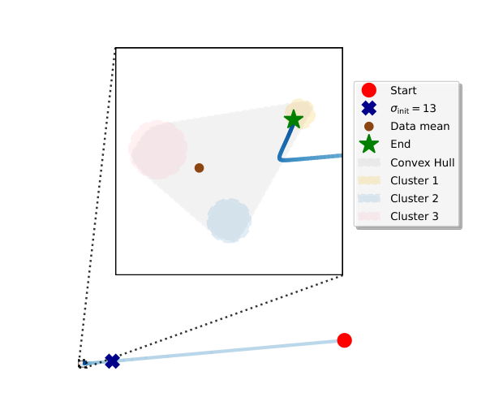

For large $\sigma$, $m_\sigma(x)=\mathbb{E}[X\mid X+\sigma Z=x]\approx\mathbb{E}[X]$,
because the $\sigma Z$ term dominates the observation.

Contraction (Prop. 6.3, informal)
Fix any $\zeta\in(0,1)$. There exists $\sigma_{\mathrm{init}}$ such that for $\sigma_1>\sigma_{\mathrm{init}}$,
$$\|\,x_\sigma - \mathbb{E}[\mathbf{X}]\,\| < \left(\tfrac{\sigma}{\sigma_1}\right)^{1-\zeta}\|\,x_{\sigma_1} - \mathbb{E}[\mathbf{X}]\,\|.$$